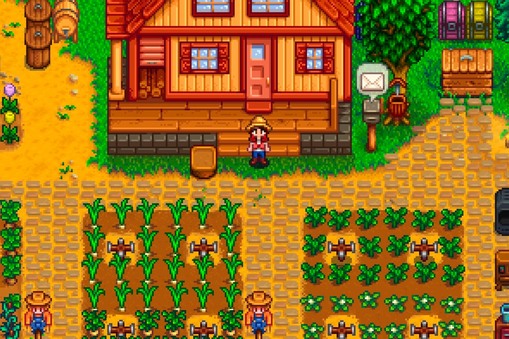
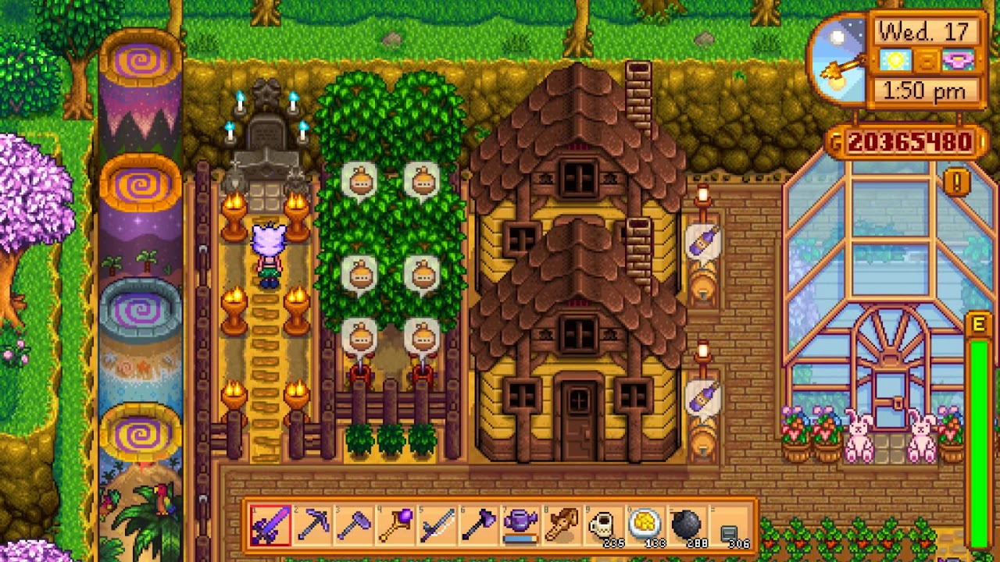

𝑻𝒉𝒆 𝑾𝒐𝒓𝒍𝒅 𝒐𝒇 𝑺𝒕𝒂𝒓𝒅𝒆𝒘 𝑽𝒂𝒍𝒍𝒆𝒚
𝒯𝒽𝒾𝓈 𝓌𝑒𝒷𝓅𝒶𝑔𝑒 𝒾𝓈 𝒷𝒶𝓈𝑒𝒹 𝓊𝓅𝑜𝓃 𝓉𝒽𝑒 𝑔𝒶𝓂𝑒 𝒮𝓉𝒶𝓇𝒹𝑒𝓌 𝒱𝒶𝓁𝓁𝑒𝓎. 𝒪𝓃 𝓉𝒽𝑒𝓈𝑒 𝓌𝑒𝒷𝓅𝒶𝑔𝑒𝓈,
𝓎𝑜𝓊'𝓁𝓁 𝒻𝒾𝓃𝒹 𝒶 𝓌𝒾𝒹𝑒 𝓋𝒶𝓇𝒾𝑒𝓉𝓎 𝑜𝒻 𝒾𝓃𝒻𝑜𝓇𝓂𝒶𝓉𝒾𝑜𝓃 𝒶𝓃𝒹 𝒸𝑜𝓃𝓉𝑒𝓃𝓉 𝒶𝒷𝑜𝓊𝓉 𝓉𝒽𝑒 𝑔𝒶𝓂𝑒,
𝓇𝒶𝓃𝑔𝒾𝓃𝑔 𝒻𝓇𝑜𝓂 𝓉𝒽𝑒 𝒸𝒽𝒶𝓇𝒶𝒸𝓉𝑒𝓇𝓈 𝓉𝑜 𝓉𝒽𝑒 𝒶𝓃𝒾𝓂𝒶𝓁𝓈 𝓉𝑜 𝓉𝒽𝑒 𝓅𝓇𝑜𝒹𝓊𝒸𝓉𝓈 𝒶𝓃𝒹 𝓉𝒽𝑒 𝓉𝑜𝑜𝓁𝓈
𝒶𝓃𝒹 𝓈𝑜 𝓂𝓊𝒸𝒽 𝓂𝑜𝓇𝑒.

Click on the button labelled "Animals" to go to a page about the various
animals in the game.
Click on the button labelled "Characters" to go to a page about the various
characters in the game.
Click on the button labelled "Artisan Goods" to go to a page about the
various artisan goods in the game.
Click on the button labelled "Minerals" to go to a page about the various
minerals and ores in the game.
Click on the button labelled "Tools" to go to a page about the various
tools and weapons in the game.
